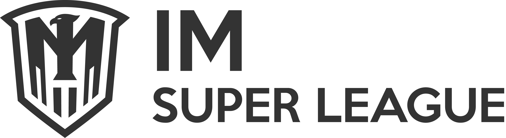

Welcome to the IM Super League Reporting & Browsing Client
IM Super League is a decentralized oracle and peer to peer protocol for user-created prediction markets. IM Super League is free, public, open source software and a set of smart contracts written in Solidity that can be deployed to the Binance Smart Blockchain, collectivley known as (the “IM Super League Protocol”). Before using the IM Super League Protocol, please review the FAQs and documentation (the “Documentation”) for a detailed explanation on how the IM Super League Protocol works.
The IM Super League League (the “League”) is a not-for-profit entity. It does not own or lead IM Super League, but rather supports and develops the free, open-source protocol that is IM Super League. Portions of the IM Super League Protocol are made available under the GNU General Public License and portions under the MIT license -- and the disclaimers contained therein apply including that the IM Super League Protocol is provided “AS IS”, “WITH ALL FAULTS” and “AT YOUR OWN RISK”. The League will not be liable for any liability or damages whatsoever associated with your use, inability to use, or your interaction with other users of, the IM Super League Protocol, including any direct, indirect, incidental, special, exemplary, punitive or consequential damages, loss of profits, IM Super League Token (IMSL), Wrapped BNB (WBNB) tokens, and any other cryptocurrencies or anything of value, including fiat currency.
You acknowledge that the current version of the IM Super League Protocol is a beta version and as such has not been fully-tested and may not perform as designed. On the IM Super League Protocol, IM Super League Token (IMSL), Wrapped BNB (WBNB) tokens may be used respectively for staking on outcomes and trading, and in the future, other tokens or cryptocurrencies may be used. While you should always be thoughtful about the IMSL, and WBNB or other tokens/cryptocurrencies you stake and trade (and can lose) through the IM Super League Protocol, the concerns regarding loss of these tokens or cryptocurrencies is particularly acute with beta software that may not perform as designed, including that the beta version of the IM Super League Protocol may not accurately reflect the intent of the smart contracts, the FAQs or the Documentation. Your use of the IM Super League Protocol involves various risks, including, but not limited to losing tokens/cryptocurrencies due to invalidation. Careful due diligence should be undertaken as to the amount of IMSL, WBNB or other tokens/cryptocurrencies you stake and trade using the IM Super League Protocol in beta format with full understanding that any staking and trading of these tokens/cryptocurrencies could be subject to total loss. You assume any and all risk associated with your use of the IM Super League Protocol.
Although the League has not sought to list IMSL on cryptocurrency exchanges, it is aware that IMSL has been listed on certain exchanges and in the future it may be delisted on these exchanges and/or listed on others. The League disavows any obligation with respect to the listing of IMSL on exchanges and it disavows any responsibility with respect to the value or trading of IMSL on exchanges. Persons trading IMSL or otherwise engaged in activities involving IMSL on exchanges assume any and all risk, including that of total loss, associated with such activities.
You are solely responsible for compliance with all laws that may apply to your particular use of the IM Super League Protocol. Cryptocurrencies and blockchain technologies have been the subject of scrutiny by various regulatory bodies around the world. The League makes no representation regarding the application of any laws, including but by no means limited to those relating to gaming, options, derivatives or securities, to your use of the IM Super League Protocol. Indeed, depending on the jurisdiction and the contemplated use of the IM Super League Protocol (whether yours or another’s), that use may be considered illegal. You agree that the IM Super League League, or any other referrer is not responsible for determining whether or which laws may apply to your use of the IM Super League Protocol. You may modify the IM Super League Protocol under the terms of the applicable open source license to effectuate your compliance with any applicable laws.